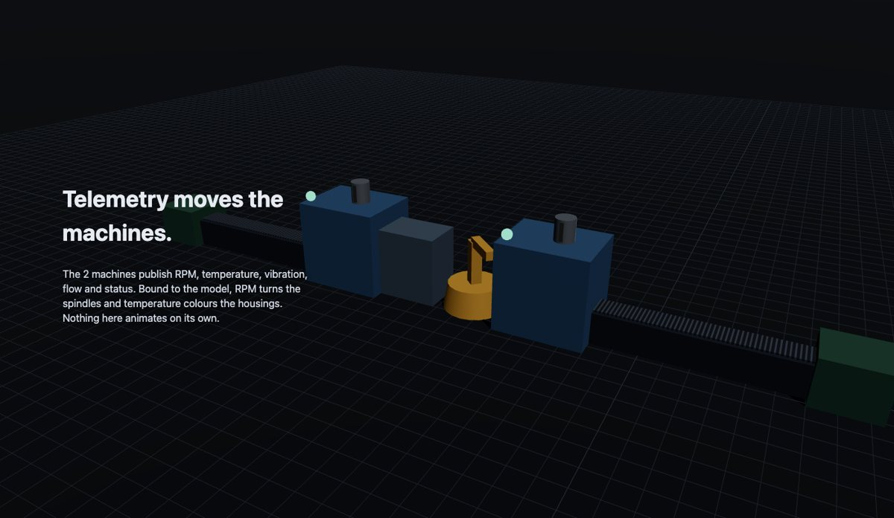
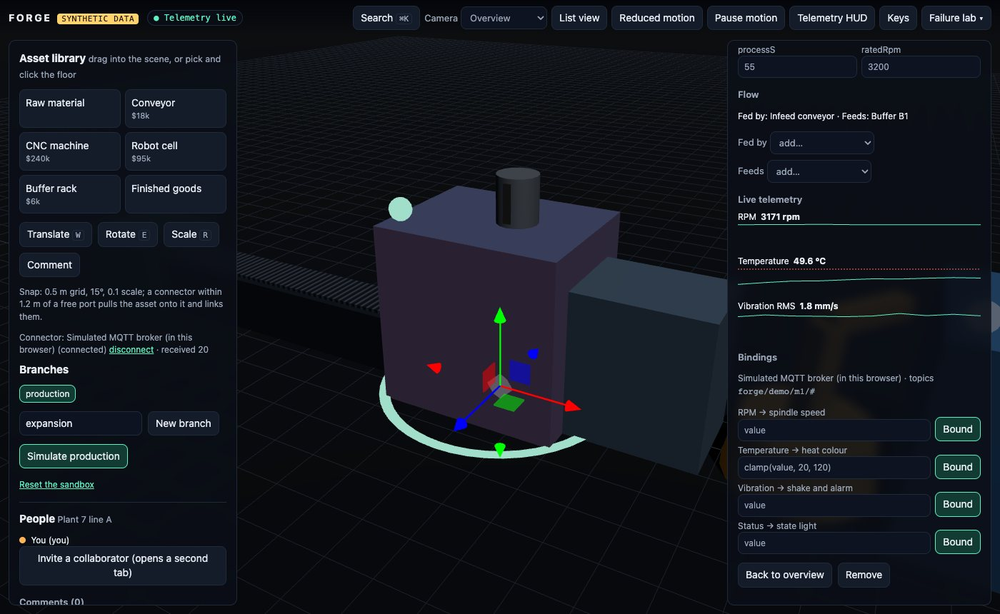
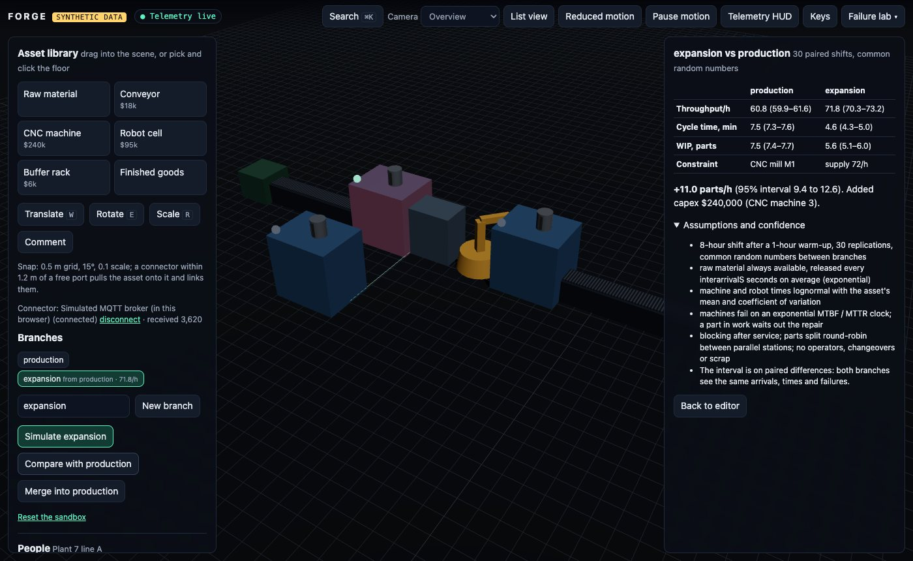
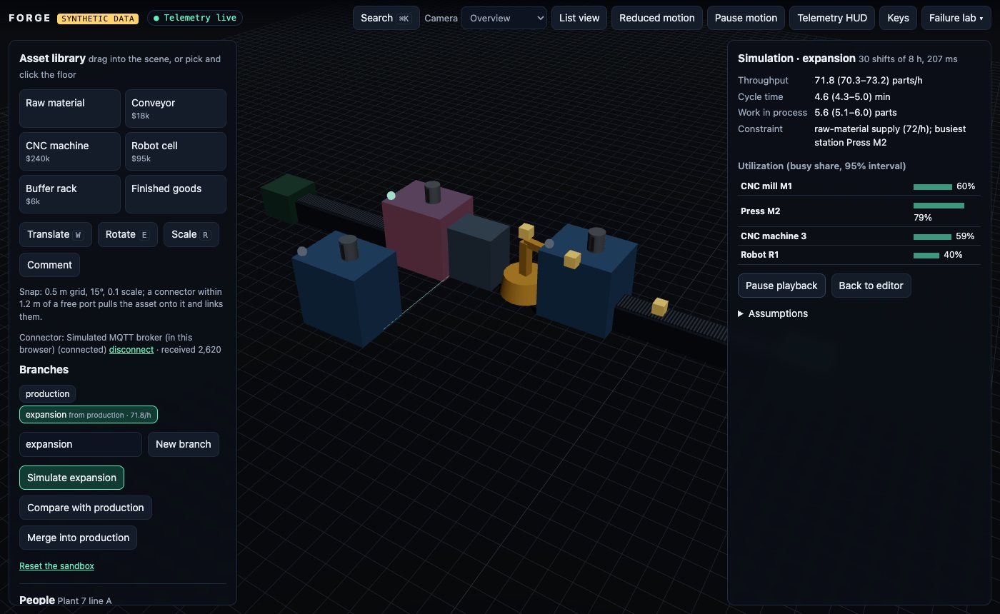
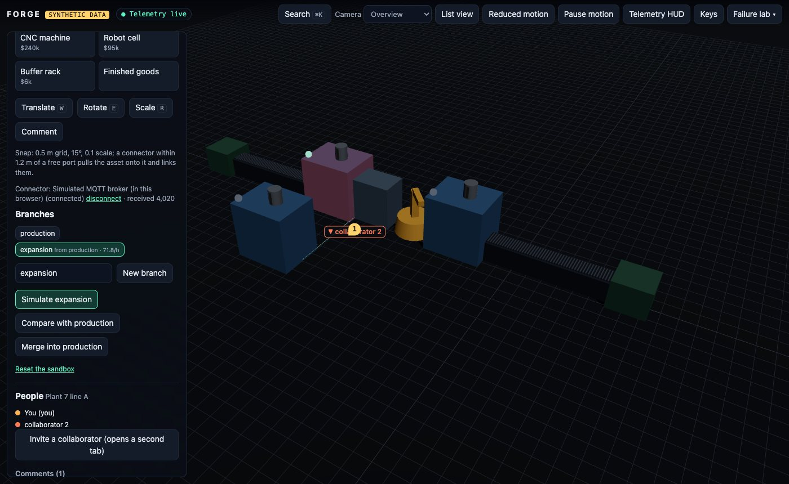

TypeScript · three.js · discrete-event simulation · 2026-10
Would a Second CNC Machine Pay Off?
A browser-native digital twin of a synthetic factory line: assets dragged in with snapping gizmos, MQTT telemetry bound to their motion, an expansion branch with a second CNC machine, a discrete-event simulation compared with production (+11.0 parts/h, 95% interval 9.4 to 12.6, for $240,000), and two people editing the same scene.

Built from blueprint 10 of a written build book (Volume V, motion-first products) as one vertical slice. Everything is synthetic: the plant, its machines, their telemetry, the bearing fault and every simulation result come from generators in the repository. Nothing is a real factory or sensor. Not built: real plant connectors (OPC-UA, Modbus), Kafka, TimescaleDB, Redis, object storage, rigid-body physics, energy and machine-assignment optimisation, glTF assets, Terraform and cloud deployment, single sign-on, billing.
01 — The problem
A plant engineer thinks line A is held back by its CNC mill and wants a second one, a $240,000 machine. Before buying it they want to see the line, wired to its real telemetry, try the change on a copy, and know how sure the answer is. Does a second CNC machine raise throughput, by how much, and what limits the line afterwards?
The build book's rule for this volume is that the public website is the product: motion has to show state and causality, and a visitor should understand the system by using it. Blueprint 10 of ten, built as its demo scenario end to end.
02 — What I built
A Next.js site that runs entirely in the browser on synthetic data, plus a Fastify API on PostgreSQL with Mosquitto, a plant simulator and an OpenTelemetry collector, started by one docker compose up.
- A scene editor: an asset library with connector ports, a gizmo with grid, angle and scale snapping, and connector-aware snapping that links what it snaps.
- Telemetry: a seeded plant simulator publishing RPM, temperature, vibration, flow and status over MQTT, a WebSocket relay with per-client backpressure, and bindings whose transforms are parsed, never executed.
- Branches like version control, with three-way merge and conflicts.
- A discrete-event simulation of the line with failures, replications, confidence intervals and paired comparison, run in a Web Worker or on the API.
- Collaboration: world-space cursors and comments, edits that converge in any delivery order.
- A vibration detector for predictive maintenance, and a failure lab.
03 — How it was built
- 01
A line that assembles itself
The homepage is an empty grid. Scrolling the first chapter drops eight assets into place in flow order (raw material, infeed conveyor, CNC mill M1, buffer B1, robot R1, press M2, outfeed conveyor, finished goods), each laid out port to port. The next chapter starts telemetry: spindles turn at their RPM, drawn at 1/40 speed so 3,200 rpm does not alias at 60 frames a second, and housings warm toward their temperature limit. The last runs parts through a recorded simulation of the line, then becomes your project.
- 02
Snapping that wires the line
Assets are dragged in from the library. Positions snap to a 0.5 m grid, rotations to 15°, scale to 0.1. If a connector lands within 1.2 m of a free port, the asset turns to face it, moves so the two ports coincide, and the link is created: a robot dropped about 0.6 m off a conveyor's end lands port to port. Splits and merges, which a single port cannot snap, are made in the inspector.
const yaw = mine === "in" ? atan2(-d.z, d.x) : atan2(d.z, -d.x); // face the other port position = trial.position + (theirPort - myPort); // then make the ports coincide - 03
Telemetry that drives the model
A seeded simulator gives each machine load cycles, a first-order thermal lag and, on demand, a bearing fault that grows until the machine trips. It publishes over MQTT with retained messages: an in-browser broker in the sandbox, Mosquitto with password auth in Docker. Bindings map a topic to a property through a transform such as
clamp(value, 20, 120), read by a small parser (numbers, value, four operators, four functions);process.exit()is a parse error. The broker credentials stay on the server, encrypted with AES-256-GCM; a test checks they appear in no response and nowhere in the web bundle. - 04
Backpressure and reconnects
Every consumer gets a bounded queue that keeps the latest value per topic and drops the oldest when full: a 20,000-message storm costs the page nothing. When the broker goes away the connector backs off (jittered, doubling, capped at 8 s), the values go stale, and on reconnect the broker's retained messages refill them. The browser simulator and the MQTT connector pass the same contract test; the MQTT one runs against Mosquitto through a TCP proxy the test cuts and restores. One bug only the browser showed: calling
setTimeoutas an object's method throws 'Illegal invocation', so the first version never reconnected. - 05
Simulating the branch
The expansion branch adds a second CNC machine fed by the infeed conveyor and feeding buffer B1. The discrete-event model builds stations from the scene graph (only what raw material can reach), blocks parts after service, runs conveyors first in, first out, and fails machines on an MTBF/MTTR clock. Thirty 8-hour shifts take about 120 ms. A test of Little's law found the first conveyor letting a new part overtake four that had been waiting since the start of the shift; with that fixed, work in process matches throughput times cycle time within 5%.
// oldest finished part first: a newer part must not overtake one that is waiting const ready = servers.filter((v) => v.part && v.finished).sort((a, b) => a.doneAt - b.doneAt); - 06
Comparing with production
Both branches see the same arrivals, process times and failures (common random numbers), so the interval is on the paired difference. Production makes 60.8 parts/h (59.9 to 61.6) with CNC mill M1 busy 98% of the time; the expansion makes 71.8 (70.3 to 73.2). The second machine does not make the press the new bottleneck: the line becomes limited by how fast raw material is released, 72/h (it waits for room 9% of the time, against 98% before). Sizing buffer B1 barely matters, 60.3 to 61.0 parts/h for 0 to 8 slots, because it sits after the bottleneck.
- 07
Two people, one scene
An invite opens a second tab that joins the project; its cursor appears on the factory floor and a comment it pins at a floor position shows up in the first tab. Edits are operations stamped with a Lamport clock and the author; each asset field is a last-writer-wins register, so fifty random sessions of thirty edits, delivered in shuffled orders with duplicates, all converge to the same scene. In Docker the API relays them and stores the comments; viewers can watch but their edits are not relayed.
04 — Results
The demo. Telemetry bound to CNC mill M1, with live charts and the gizmo:

The expansion branch, simulated and compared with production:

| production | expansion | |
|---|---|---|
| Parts/h | 60.8 | 71.8 |
| Cycle, min | 7.5 | 4.6 |
| Limit | CNC M1 | supply |


Predictive maintenance. A bearing fault on press M2 raises a vibration alarm while it is still running: in 50 simulated faults, 50 alarms, none early, a median of 22.3 minutes before the trip; no alarms in 50 healthy 8-hour runs. The detector and the fault come from the same generator, so this checks the code, not real-world accuracy.
Checks. 200 random scenes round-trip through serialization byte for byte. Coverage of the domain and motion code: 98% of statements. API responses are validated against the OpenAPI document; another tenant gets 404 on the project, its assets, branches and telemetry socket. Nine Playwright journeys pass, and the full scenario passes again against the Docker stack.
Performance. 60 FPS with a real GPU (p95 frame 18.0 ms). The 2,000-asset campus draws in 3 instanced calls. The API served 1,931 reads a second at p95 27.7 ms and held 2,000 telemetry WebSockets open on one process.
05 — What I'd do next
- Model operators, changeovers and scrap, since the supply limit found here assumes raw material arrives on its own.
- Release raw material faster in the expansion branch and find where the line saturates next.
- A real OPC-UA or Modbus gateway behind the connector interface, with the contract test run against it.
- Undo and redo across users, and persisted presence.